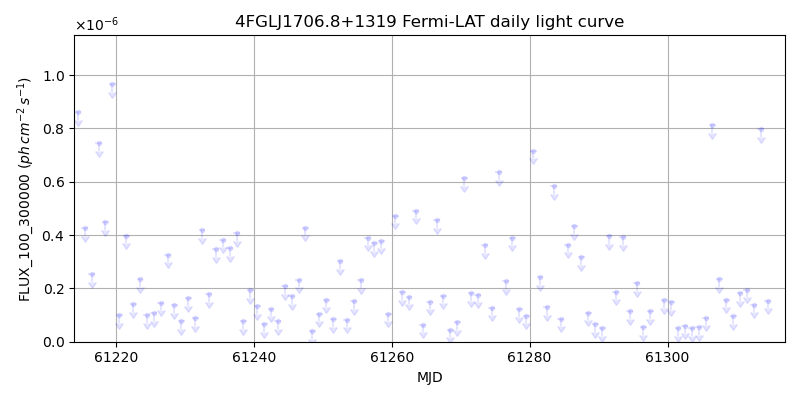
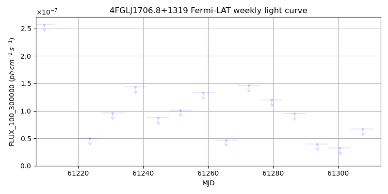
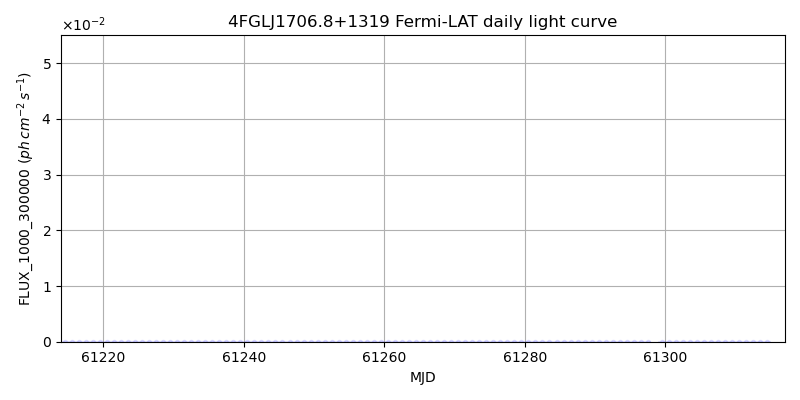
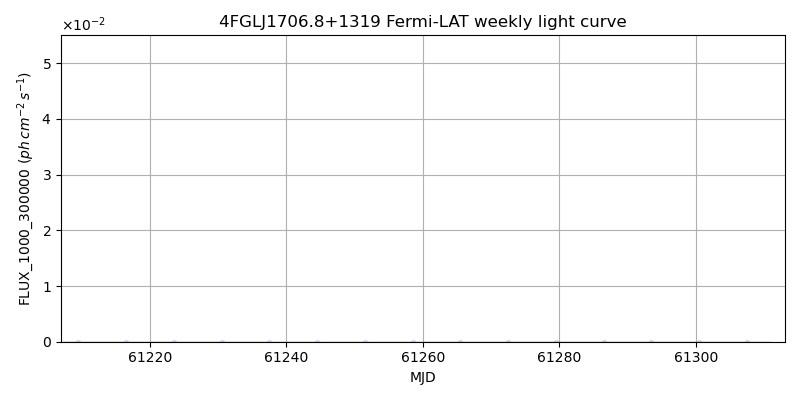

LAT Lightcurve site: https://fermi.gsfc.nasa.gov/ssc/data/access/lat/msl_lc/source/4FGL_J1706d8p1319
NED: Query
Time of last update of this page: UT: 2026-10-02 15:23 (MJD: 61315.641)
| Property | Value |
|---|---|
| R.A. | 17:06:52.80 |
| Dec. | 13:19:48.0 |
| z | 0.000 |
| 3FGL SpectrumType | |
| 3FGL PL Index | -1.00 |
| 3FGL Flux_100_300000 | -1.00e+00 |
| 3FGL Flux_1000_300000 | -1.00e+00 |
| 3FGL Flux >200 GeV | -1.00e+00 |
| 3FGL Extrap. Crab >200 GeV | -1.00 |
| 3FGL Flux After EBL Absorption >200GeV | -1.00e+00 |
| 3FGL EBL Crab Fraction >200GeV | -1.00 |

| MJD | dMJD | Flux | dFlux | Frac3FGL | FracCrab>200GeV | EBLFracCrab>200GeV |
|---|---|---|---|---|---|---|
| 61310.50 | 0.50 | 1.81e-07 | 0.00e+00 | 0.00 | 0.00 | -0.00 |
| 61311.50 | 0.50 | 1.96e-07 | 0.00e+00 | 0.00 | 0.00 | -0.00 |
| 61312.50 | 0.50 | 1.39e-07 | 0.00e+00 | 0.00 | 0.00 | -0.00 |
| 61313.50 | 0.50 | 7.98e-07 | 0.00e+00 | 0.00 | 0.00 | -0.00 |
| 61314.50 | 0.50 | 1.54e-07 | 0.00e+00 | 0.00 | 0.00 | -0.00 |

| MJD | dMJD | Flux | dFlux | Frac3FGL | FracCrab>200GeV | EBLFracCrab>200GeV |
|---|---|---|---|---|---|---|
| 61279.50 | 3.50 | 1.20e-07 | 0.00e+00 | 0.00 | 0.00 | -0.00 |
| 61286.50 | 3.50 | 9.50e-08 | 0.00e+00 | 0.00 | 0.00 | -0.00 |
| 61293.50 | 3.50 | 3.93e-08 | 0.00e+00 | 0.00 | 0.00 | -0.00 |
| 61300.50 | 3.50 | 3.24e-08 | 0.00e+00 | 0.00 | 0.00 | -0.00 |
| 61307.50 | 3.50 | 6.68e-08 | 0.00e+00 | 0.00 | 0.00 | -0.00 |

| MJD | dMJD | Flux | dFlux | Frac3FGL | FracCrab>200GeV | EBLFracCrab>200GeV |
|---|---|---|---|---|---|---|
| 61310.50 | 0.50 | 1.74e-08 | 0.00e+00 | 0.00 | 0.00 | -0.00 |
| 61311.50 | 0.50 | 5.92e-08 | 0.00e+00 | 0.00 | 0.00 | -0.00 |
| 61312.50 | 0.50 | 1.36e-08 | 0.00e+00 | 0.00 | 0.00 | -0.00 |
| 61313.50 | 0.50 | 5.12e-08 | 0.00e+00 | 0.00 | 0.00 | -0.00 |
| 61314.50 | 0.50 | 3.66e-08 | 0.00e+00 | 0.00 | 0.00 | -0.00 |

| MJD | dMJD | Flux | dFlux | Frac3FGL | FracCrab>200GeV | EBLFracCrab>200GeV |
|---|---|---|---|---|---|---|
| 61279.50 | 3.50 | 1.04e-08 | 0.00e+00 | 0.00 | 0.00 | -0.00 |
| 61286.50 | 3.50 | 5.69e-09 | 0.00e+00 | 0.00 | 0.00 | -0.00 |
| 61293.50 | 3.50 | 6.90e-09 | 0.00e+00 | 0.00 | 0.00 | -0.00 |
| 61300.50 | 3.50 | 2.14e-09 | 0.00e+00 | 0.00 | 0.00 | -0.00 |
| 61307.50 | 3.50 | 4.21e-09 | 0.00e+00 | 0.00 | 0.00 | -0.00 |
--------------------------------------------------------- Using user-supplied coords: 17:06:52.80 13:19:48.0 2000 --------------------------------------------------------- FLWO UT night of: 2026-10-03 Local Sid. @ Midnight: 00:24 Sunset (-15.0) (local, UT): 19:14 02:14 Sunrise (-15.0) (local, UT): 05:12 12:12 Moonrise (local, UT): 22:48 05:48 Moonset (local, UT): Moon phase: 0.53 --------------------------------------------------------- AzTime LSID UT Obj_el Obj_az Mn_el Mn_az Sep. --------------------------------------------------------- 19:14 19:37 02:14 51.2 250.3 -28.5 20.1 136.4 19:44 20:07 02:44 45.1 256.3 -26.2 26.7 136.3 20:14 20:37 03:14 38.8 261.4 -23.2 32.8 136.1 20:44 21:07 03:44 32.5 265.9 -19.6 38.5 135.9 21:14 21:37 04:14 26.1 269.9 -15.7 43.6 135.7 21:44 22:07 04:44 19.7 273.8 -11.3 48.4 135.6 22:14 22:37 05:14 13.4 277.6 -6.5 52.7 135.4 22:44 23:07 05:44 7.1 281.3 -0.8 56.7 135.2 23:14 23:37 06:14 1.1 285.2 3.8 60.4 135.0 23:44 00:07 06:44 -5.0 289.2 9.1 63.9 134.9 00:14 00:38 07:14 -11.3 293.5 14.6 67.1 134.7 00:44 01:08 07:44 -17.1 298.2 20.3 70.2 134.6 01:14 01:38 08:14 -22.6 303.3 26.1 73.1 134.4 01:44 02:08 08:44 -27.7 309.0 32.1 76.0 134.3 02:14 02:38 09:14 -32.5 315.5 38.1 78.8 134.1 02:44 03:08 09:44 -36.7 322.8 44.2 81.7 134.0 03:14 03:38 10:14 -40.2 331.0 50.3 84.8 133.9 03:44 04:08 10:44 -42.8 340.1 56.5 88.1 133.8 04:14 04:38 11:14 -44.5 350.0 62.7 91.9 133.7 04:44 05:08 11:44 -45.0 0.2 68.9 96.9 133.6 05:12 05:37 12:12 -44.5 10.0 74.7 103.8 133.5 --------------------------------------------------------- Dark hours >55 deg.: 0.00